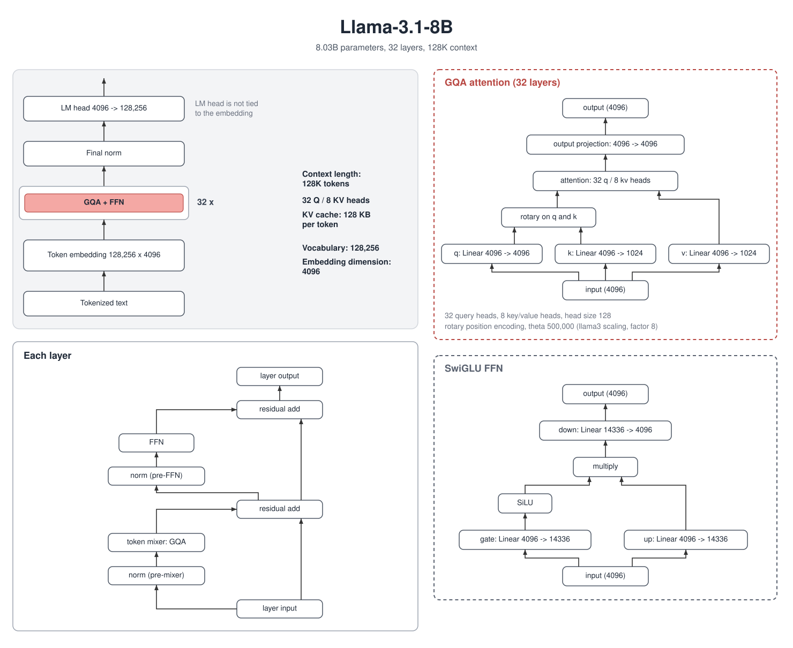

Llama-3.1-8B
meta-llama/Llama-3.1-8B · released 14 Jul 2024 · analysed at commit d04e592bb4
1 of 4 key facts verified
- total parameters
- 8.03B
- active per token (dense)
- all
- layers
- 32
- context tokens
- 128K
- cache per token
- 128 KiB
Overview
Dense: GQA in all 32 layers.
Architecture
Drawn by Gemini from verified fields, passed 24 of 24 checks

Where every number comes from
Each fact is read from the model's own files. Verified means two independent sources agree.
| Fact | Value | Sources | Status |
|---|---|---|---|
| Total parameters | 8.03B (8,030,261,248) | safetensors headerssum of tensor shapes | one source |
| Layers | 32 | config.json, safetensors headersnum_hidden_layers; highest layer index + 1 | verified |
| Layer mix | Global attention 32 | config.json(no per-layer pattern; all layers assumed identical) | one source |
| Context length | 131,072 | config.jsonmax_position_embeddings | one source |
| Hidden size | 4,096 | config.json, safetensors headershidden_size; embed_tokens columns | verified |
| Vocabulary | 128,256 | config.json, safetensors headersvocab_size; embed_tokens rows | verified |
| Attention type | GQA | computed from published fieldsnum_key_value_heads(8) vs num_attention_heads(32) | one source |
| Attention heads | 32 | config.jsonnum_attention_heads | one source |
| KV heads | 8 | config.jsonnum_key_value_heads | one source |
| Head dim (q/k) | 128 | computed from published fieldshidden_size/num_attention_heads | one source |
| Activation | silu | config.jsonhidden_act | one source |
| Decoder type | Dense | computed from published fieldsno expert keys | one source |
| Gated FFN | yes | safetensors headersFFN gate/up/down tensor layout | one source |
| FFN hidden size | 14,336 | config.json, safetensors headersintermediate_size; feed_forward.w1 rows | verified |
| Model type | llama | config.jsonmodel_type | one source |
| Released weights | bfloat16 | config.jsondtype | one source |
| Rope | rope theta: 500,000, scaling: factor: 8, low freq factor: 1, high freq factor: 4, original max position embeddings: 8,192, rope type: llama3 | config.jsonrope_theta/rope_scaling/partial_rotary_factor/rope_local_base_freq (present keys) | one source |
| Tied embeddings | no | config.jsontie_word_embeddings | one source |
| Cache per token | 131,072 B | ArchWatch calculatorbf16; growing part per token (sliding-window and constant states excluded), from published fields | computed |
How much memory does the cache need?
One sequence, bf16, weights not included. Pick a context length.
16.00 GiB at 131,072 tokens
Global attention layers (32) add 131,072 B per token.